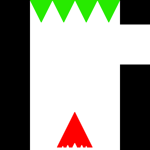

Game Concept
A maze-like puzzle game where you must avoid obstacles as you move through. The catch? You don’t actually move until you release the key leaving you blindly guessing how far you’ll go.
Genre
Slider is a maze/puzzle game in which you have to navigate a maze without running into any obstacles.
Platform
Slider will be a desktop only game. There exists the possibility of making it mobile friendly as well however that is not the initial target.
Story
There is not story in Slider. Its abstract style and simple premise leaves it only giving the player the goal of making it to the end of the level.
Aesthetics
The style of Slider will be very abstract (and only partially because I lack any artistic skill). The character and obstacles will consist of simply colored uniform shapes and the walls of the level will be very plain as well.
Gameplay
The player must navigate their way through a maze without running into any obstacles. However, they cannot see how far they are moving until the key is released meaning they will have to estimate where they’ll end up. They player must reach the end before they use up all their lives.
Concept Art
Sample 1
Sample 2
About the Developer
My name is Alex Herman and I'm a second year Game Design and Development student at RIT. My skills in coding are mostly in C# and Java. I'm also proficient in several programs such as Photoshop, Maya, and Unity. My interests are all over the place from languages, to science, to history and everywhere in between. Games happen to be a decent way for me to combine all, or at least most, of my interests.
Original can be found here.